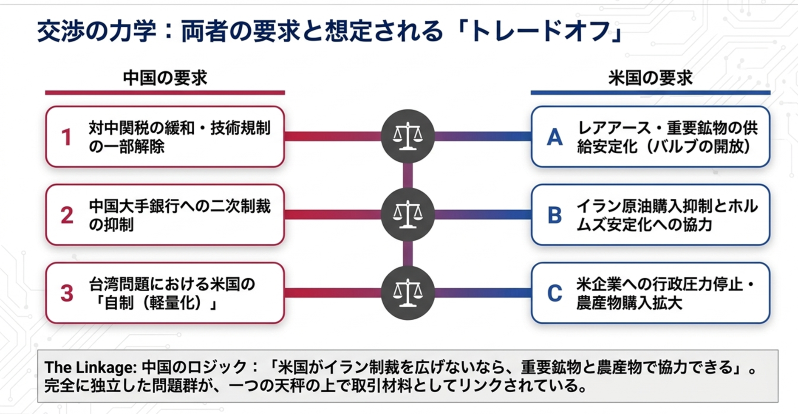
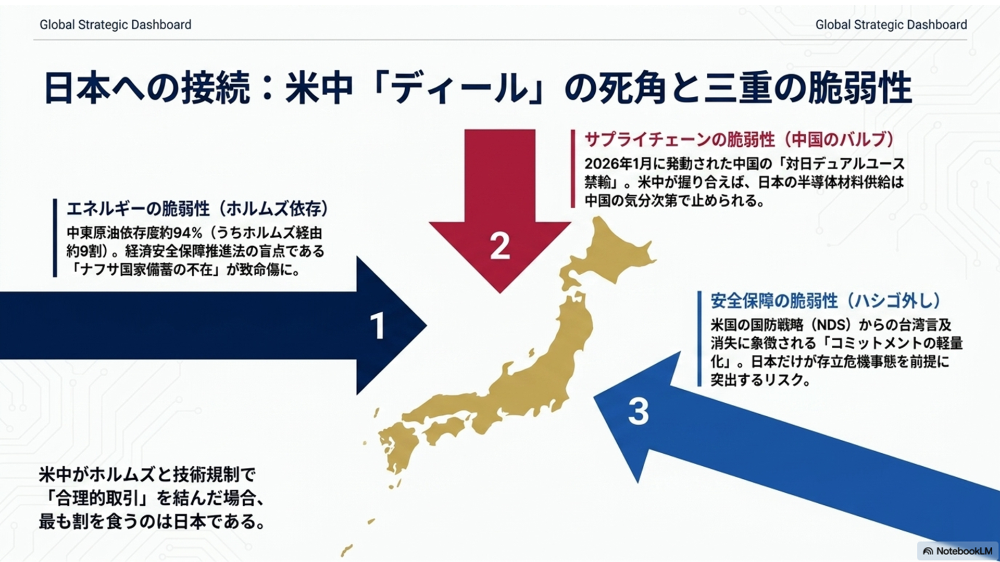

首脳会談のたびに、日本は祈る国になる。5月14、15日に北京で予定される米中首脳会談も、おそらく同じ光景を生むだろう。
台湾はどう扱われるのか。レアアースは止まるのか。ホルムズ海峡は燃え広がるのか。半導体の首輪は、どちらの手に握られるのか。日本は固唾をのんで見守る。だが今回ばかりは、見守るだけでは済まされない。
この会談は、単なる「米中交渉」ではない。日本のエネルギー安全保障、経済安全保障、そして同盟の信頼性という国家の三本柱を、同時に揺さぶる政治的地震である。
まず見落としてはならない地殻変動がある。第一は、米国側の法的制約である。2026年2月、米最高裁はIEEPA、すなわち国際緊急経済権限法に基づく大統領の即応的な関税権限に違憲判断を示した。トランプ政権が「最強の交渉カード」として振るってきた関税の切れ味は、司法によって鈍らされた。これは派手な砲声を伴わない。だからこそ危うい。米国の交渉力は、静かに、しかし根元から変質しているのである。
第二は、台湾をめぐる戦略の軽量化である。2026年1月に公表された国家国防戦略、NDSから、台湾に関する具体的記述が消えた。戦略的曖昧性は従来、抑止のための曖昧さであった。だが、記述の消滅は、曖昧性が「余白」から「後退」へ変わる兆しにも見える。中国外相はすでに米国務長官に台湾を「最大のリスク」と伝えている。台湾が首脳会談の取引材料として浮上する条件は、すでに整いつつある。
第三は、期限である。2025年11月、中国は対米レアアース等の輸出規制を「1年間停止」すると発表した。その期限が2026年11月に来る。この日付こそ、5月会談の背後で針を進める時限装置だ。今回の首脳会談は、友好の演出でも、包括的妥結への序章でもない。迫り来る崖を前に、両国が互いの転落を避けるために設ける、仮設の管理台なのである。
ここに今回の本質がある。これは「交渉」ではない。
交渉とは、少なくとも一方が相対的優位を持ち、その優位をもって相手を譲歩させる営みである。だが現在の米中は違う。中国は磁石用レアアースの精製で世界の9割超を握る。ガリウム、ゲルマニウム、黒鉛の輸出を絞れば、米国の防衛産業、半導体産業、EV産業は直ちに痛撃を受ける。規制後にイットリウム価格が1年で6900%上昇した事例は、その破壊力を物語る。
一方、米国はドル決済網を握る。中国の大手銀行を二次制裁でドルから排除すれば、中国の対外決済能力は深刻な損傷を受ける。中国が保有する米国債は2026年2月時点で約6,933億ドルに達する。これを急売すれば米金利を揺さぶることはできるが、同時に自国の外貨準備も傷つく。さらに中国の2026年のGDP成長率目標は4.5〜5%と、1991年以来の低水準である。不動産危機と債務問題を抱える国内経済に、長期の対米消耗戦を支える余力は乏しい。
つまり、どちらも相手を傷つける力を持つが、その刃は必ず自分にも返ってくる。ここに成立しているのは、勝者と敗者の構図ではない。「相互人質」の構造である。冷戦期の核抑止が世界を凍らせたように、いまや経済の領域において、相互確証損害に似た均衡が生まれている。したがって会談の実質は、交渉ではなく、共倒れを避けるための休戦管理となる。
想定される合意の上限も、おのずと見えている。レアアース輸出停止期限の延長、米農産物やLNG購入の拡大、そして互いに面子を保つ表現上の譲歩である。だが構造的対立は終わらない。マキャベリなら、ここに権力政治の冷厳な姿を見ただろう。国家は善意で動かない。恐怖と利益の計算によって、かろうじて破滅を避けるのである。
中国にも弱点はある。レアアースというカードは、切れば切るほど相手に代替供給網の構築を急がせる。すなわち、今日の圧力は明日の独占利益を削る。だから北京は全面禁輸ではなく、許可制による不確実性の管理を選ぶ。これは粗暴な恫喝ではなく、相手の企業と政府を疲弊させる精密な圧力である。イランへの影響力も同じ性質を持つ。中東の安定を望む米国に対し、中国は「中国企業への二次制裁を緩めるなら、イランに抑制を促す」という交換可能性を保持している。

ここで日本の危機が立ち上がる。日本の中東原油依存度の約94%がホルムズ経由だ。そのホルムズが、いまや米中の取引空間に組み込まれている。2026年2月以降、イランによる事実上の封鎖と米海軍のブロックが続き、4月13日には対イラン港湾封鎖が発効した。中国はイラン産原油の最大顧客であり、中東安定を求める米国は北京の協力を必要としている。これは、日本の生命線が、米中間の交渉材料になり得るということだ。

しかも日本には制度的な空白がある。第一に、ナフサの国家備蓄義務がない。石油化学産業の血液ともいうべき原料について、国家として備えを持たないのである。第二に、重要鉱物の代替調達網を構築するには最低でも3〜5年を要する。中国依存は、かけ声だけでは消えない。第三に、米中が実利で手を打った瞬間、日本企業は米国の脱中国要請と、中国の供給網安全規則との板挟みに置かれる。2026年4月に中国が施行した同規則は、脱中国を進める外資企業への法的報復を制度化するものである。
米中が対立している時、日本は同盟の論理で語ることができる。だが米中が手を握った時、日本はどうするのか。ここに本稿の核心がある。真に恐れるべきは、米中対立の激化だけではない。米中が日本抜きで休戦を管理し、日本の脆弱性を残したまま、エネルギーと鉱物の条件を決めてしまうことである。大国の対立は危険だが、大国の妥協もまた小国を傷つける。歴史はそのことを幾度も示してきた。
反論はあろう。米国は同盟国であり、日本を見捨てるはずがない。中国も自国経済を傷つける全面禁輸には踏み切れない。だから過度に悲観する必要はない、と。たしかに一面の理はある。だが同盟とは、相手の善意を信じて眠るための枕ではない。危機に際して、自国の脆弱性を減らすための共同装置である。ホッブスが『リヴァイアサン』で描いたように、秩序は恐怖を消すのではなく、恐怖を管理するために生まれる。国家もまた同じだ。備えなき信頼は、信頼ではなく依存である。
エドマンド・バークは、政治とは死者と生者と未生者の契約であると説いた。現在の政府が備えを怠れば、その代償を払うのは次の世代である。保守政治が伝統の継承を語るなら、それは現行制度の温存を意味しない。未来世代の安全を食いつぶさない制度設計こそ、保守の本義である。
日本が取るべき態度は明瞭だ。第一に、台湾を米中間の取引材料にしないよう、米国に静かに、しかし明確に釘を刺すことである。追随でも反米でもない。忠告できる同盟国であることこそ、成熟した同盟の条件である。第二に、ホルムズ危機と東アジアの安全保障を切り離さず、日本の生命線として扱うことである。中東と台湾海峡は別々の地図に描かれていても、実際の危機では一本の導火線でつながる。第三に、ナフサ備蓄の法制化と重要鉱物の代替調達網整備を、今年度の具体的政策課題として動かすことである。
佐藤一斎の『言志四録』には「壮にして学べば、則ち老いて衰えず」とある。米中の相互人質構造から日本が学ぶべきことは、他国のカードに期待する外交の脆弱性である。人質を持たない国は、管理会議の席に座れない。資源を備えず、鉱物を握らず、供給網を設計しない国は、ただ決定を告げられる側に回る。
日本がいま問われているのは、米中の顔色をうかがう傍観国に甘んじるのか、それとも備えを持った責任ある同盟国として振る舞うのかである。その答えは、首脳声明の美辞麗句ではなく、ナフサ備蓄制度の有無、重要鉱物調達網の進捗、そして台湾をめぐる日本外交の声の強度によって測られる。祈る国から、備える国へ。その転換を怠るなら、次の危機で日本はまた、誰かの会談の結果を待つだけの国になる。